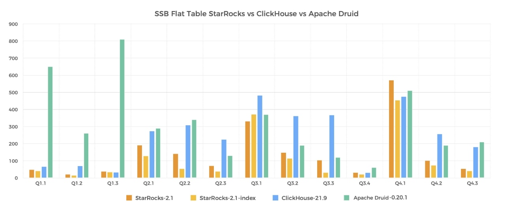
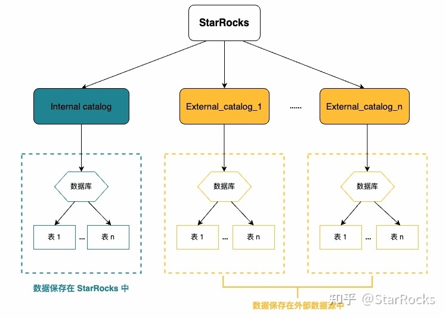
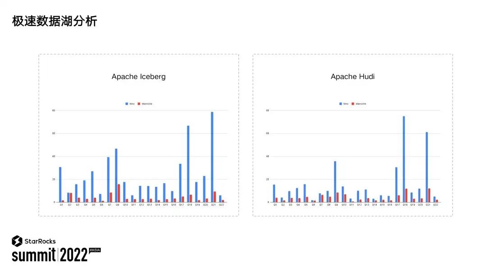
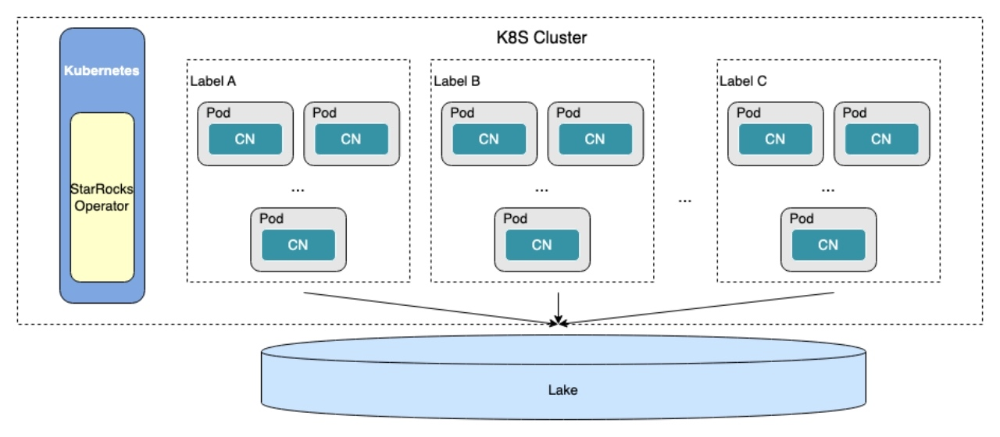
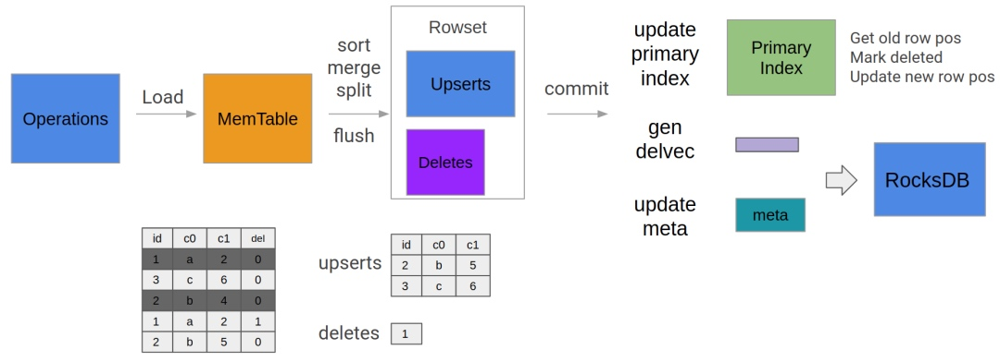
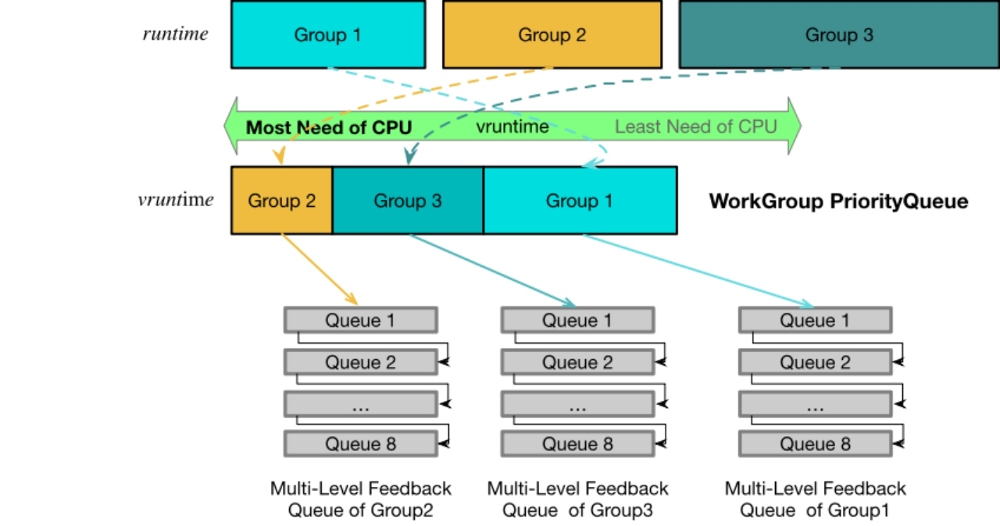
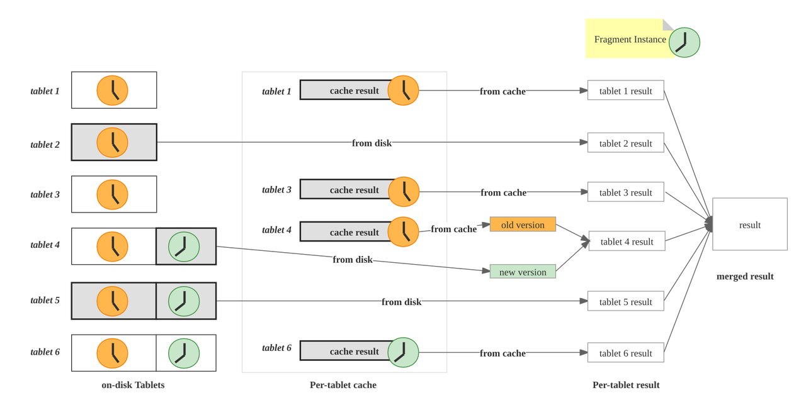

最强开源 OLAP 数据库，你应该选择的 10 个理由
作者: 康凯森
日期: 2022-12-13
分类: OLAP
- 一 极速 OLAP
- 二 极速数据湖分析
- 三 主键更新
- 四 资源隔离
- 五 物化视图
- 六 Tablet Level Query Cache
- 七 半结构化数据分析
- 八 查询并行度自适应
- 九 云原生存储分离
- 十 SAAS BYOC
2022 年即将结束，疫情持续了 3 年，StarRocks 也创立了快 3 年，今天就总结下 StarRocks 用户侧可以感知的十大 Fature 和 优化，也希望大家对 StarRocks 有一个更全面的认知。
一 极速 OLAP

图中是我们官网展示的 SSB 单表的查询性能对比，可以看到，相比业界其他优秀的 OLAP 数据库，我们 StarRcoks 在性能上有着明显的优势，不止是 SSB 单表查询，SSB 多表，TPC-H 查询，TPC-DS 等复杂的多表查询，我们同样拥有极致的性能。TPC-DS 查询在 100G 和 1T 规模下，StarRcoks 相比 Snowflake 有2到3倍的性能优势。
极致的性能不仅可以带来更好的用户体验，让之前难以实现的需求可以实现，更重要的是，可以节省大量的机器，为企业降本增效。
我们 StarRcoks 能拥有极致的 OLAP 分析性能，是因为2年多来，我们在以下几个方面做了大量持续深入的优化：
- MPP 分布式执行：StarRocks 拥有 MPP 的分布式执行框架，保证了 StarRocks 可以充分发挥多机 scale out 的能力
- Pipeline 并行执行框架：我们从零打造了 pipeline 并行框架，可以让 StarRocks 充分发挥多核 scale up 的能力
- 向量化执行：我们从零打造了 StarRocks 的向量化执行引擎，让 StarRocks 单核可以拥有极致的执行性能
- CBO 优化器：通过 MPP 分布式执行， Pipeline 并行执行 和 向量化执行，我们拥有了世界领先的查询执行器，但是对于复杂的SQL，优化器产生的 Plan 好坏对查询性能影响更大，所以我们又从零打造了 CBO 优化器，让 StarRocks 对于复杂查询可以产生足够好的 Plan，进而对于复杂查询，StarRocks 也可以拥有极佳的查询性能
- Global Runtime Filter : Runtime Filter 对复杂的join 查询影响极大，开关 Runtime filter，可以有几十倍的查询，我们在 Global 和 Local Runtime Filter 上都做了挺多深度优化和创新
- 全局低基数字典优化：目前主要是可以优化包含低基数字符串的各类查询，整体会有2到3倍的性能提升，面向的场景主要是业务的维表中有大量的低基数字符串列。
对上面技术原理感兴趣的可以参考我们 StarRocks 官方微信公众号和 B 站的相关技术分享。
二 极速数据湖分析
当我们拥有了一个极速的查询引擎，可以实现极速 Olap 分析后，一个自然而然的想法就是，我们是不是也可以直接查询 Apache Hive、Apache Iceberg 和 Apache Hudi 等开源数据湖或数据仓库的数据上呢？ 答案是 Yes ! 这样的一个巨大好处是用户省去了数据导入或者同步这个工作，对用户的易用性大大增强。
所以从21年开始，我们就成立了专门的数据湖分析团队，致力于提供开箱即用的极速数据湖分析体验。一年多来，用户侧可以感知的优化和功能如下：
- 1 各种外部数据源接入更加简单：开发了全新的 Connector 框架和 Catalog 机制，访问外部数据源变得很容易，只需要配置下 Catalog，就可以查询到对应 DB 下的所有表数据，而不是最初一张表一张表配置，极大提升了用户的易用性。

- 2 更加极致的性能：除了查询引擎本身的持续性能提升，数据湖分析额外在 Scan 算子和外表元数据访问上做了大量优化，在有 Local Cache的情况下，外表查询性能可以媲美本地的 OLAP 表。

- 3 更加弹性： 当 BE 不负责数据存储时，就变成了一个无状态的计算节点，弹性伸缩就变得十分自然和容易，而且数据湖分析大多属于 Adhoc 查询，查询范式不固定，相比与传统的 Olap 查询，更需要弹性伸缩的能力。所以我们就新增了一种新的节点：Compute Node —— 是将 BE 的存储功能移除，只保留计算模块。 并和 K8S 结合，做到了弹性伸缩。

- 4 更加安全： 我们更好地支持了 Kerberos 认证，接入了云厂商托管的 IAM 服务。
三 主键更新
过去两年来，我们从零实现了全新的 基于列存的 Delete-and-Insert 模式的主键更新模型，可以同时支持实时更新和极致的查询性能，在大规模实时数据写入的同时，查询性能可以做到其他行业领先 OLAP 数据库的 3-5 倍。

两年来，我们的主键模型做了如下优化：
- 主键索引持久化：减少了主键索引的内存使用量，可以支持更大数据量的单表
- 部分列更新：以现有的 Delete + Insert 模式为基础，通过读取老版本数据，来填充缺失列
- 条件更新：当满足某个固定条件时才更新对应行，否则就不更新
- 高频导入优化：对 Publish version 过程，compaction 过程，合并事务数等优化
- Update 和 Delete 语句支持复杂表达式和子查询
- 主键和排序键分离
实时化是整个数据分析的大趋势，而更新的需求也越来越多，有了 StarRocks 优秀的主键模型，你可以更好的支持下面的业务场景：
- CDC 实时同步 TP 数据到 StarRocks 中，这也是使用最广泛的场景
- 数据处理范式从 ETL 变成 ELT，也需要强大的更新能力
- 实时流中通过多表 Join 更新数据的场景，有了 Partial-Update，就可以代替部分多表 Join 的需求
- 根据某个时间戳进行条件更新
- 。。。
四 资源隔离
在生产环境中，大家一般都会遇到大查询的问题： 几个大查询吃满了整个集群的资源，影响了正常的小查询，大查询很难及时熔断和定位。 针对大查询的问题，我们从 2.3 版本开始，基于 Pipeline 执行引擎，实现了资源隔离。 目前 StarRocks 支持了内存资源的硬隔离，CPU 和 IO 资源的软隔离。
我们引入了 Work Group 的概念，每个 Work Group 可以配置使用的 CPU 和 IO 比例，我们通过两级队列调度和类型 Linux CFS 调度的算法基本保证了每个 Work Group在查询运行时，使用的资源可以符合配置的比例。
同时为了提高资源的利用率，在集群资源空闲时，每个 work group 可以使用到更多资源，对集群资源的利用率和隔离性进行了兼顾。
对一些高优业务，用户可能期望隔离性更高，我们也支持了短查询 Work Group 的 CPU 硬隔离，任何情况下，其对应的 CPU 资源都不会被占用。

五 物化视图
StarRocks 第一版的物化视图是从 Rollup 转换而来，只能用来透明加速查询，不能显示直接查询某个物化视图，也就是说物化视图只有物化的语义，没有视图的语义。
我们物化视图 2.0 版本进行了5方面的加强：
- 让物化视图可以直接被查询：将物化视图也视为一张表，这样在复杂的 ELT 或者 ELT 的数据处理过程中，就可以使用物化视图来简化 SQL
- 在数据建模场景下，支持任意复杂的SQL：也就是说，物化视图里面可以定义任意复杂的SQL，但是不保证每个物化视图都支持透明的查询改写加速
- 在透明加速场景下，支持更复杂的SQL: 目前 StarRocks 已经可以支持 Aggregate, Join, Filter, Union 等复杂查询的物化视图透明改写
- 支持对数据湖上的数据建立物化视图：对数据湖上的近期热点数据利用物化视图进行强有力的透明加速
- 物化视图支持异步刷新和自动刷新：让物化视图的创建过程和刷新过程更加简单
在 StarRocks 3.0 中，物化视图将会有一个质变，成为 StarRocks 的 Killer Feature，大家敬请期待。
六 Tablet Level Query Cache
在实时报表分析和时序查询中，大家经常会遇到分析最近某几天的数据，或者分析今天从零点一直到现在的数据这种场景，在这类查询中，最近某几天的分区 或者 最近某几个小时的数据可能被高频查询到，这种场景很适合 Query Cache 发挥作用，StarRocks 是基于 Tablet 粒度实现的 Query Cache，具有以下亮点：

Cache 命中率高 ：因为 Cache 粒度是 Tablet 粒度，比较细，不是整个查询结果集，或者某个分区的查询结果集，Cache 命中率理论上会更高。
支持多版本：支持多版本有多个好处，首先是可以支持高频实时导入，因为 tablet 旧版本的对应的 Cache 内容可以复用，只需要旧版本的 Cache 结果和新版本的增量结果合并即可
支持 Join 等多表复杂查询的结果集Cache：不像大多数系统只能支持单表查询的 Query Cache.
StarRocks 的 Query Cache 已经在 2.5 版本发布，欢迎大家使用。
七 半结构化数据分析
过去两年来，StarRocks 在持续完善半结构化数据分析能力：
- 支持了 Array, Map, Struct, Json 数据类型
- 支持了大量 Array, Map, Struct, Json 相关函数
- 支持了 Lateral Join 和 Unnest Table Function，详情可以参考 https://docs.starrocks.io/zh-cn/latest/using_starrocks/Lateral_join
- 支持了 Lambda 函数， 详情可以参考 StarRocks Lambda 函数用户文档
有了这些基础能力，你可以用 StarRocks 做一些更强大的事情：
- StarRocks 可以更好地支持用户行为分析（留存及漏斗分析，路径分析等）
- StarRocks 可以更好地支持 Parquet, ORC 等文件导入和分析
- 支持 Map 和 Json 类型可以让 StarRocks 更容易进行 Schema 变更
- 支持 Json 类型让 StarRocks 对日志分析，事件分析等场景支持更加友好
- 。。。
StarRocks 明年也会持续在半结构化数据分析上发力。
八 查询并行度自适应
StarRocks 的查询一开始是 Fragment 并行机制，将每个查询的并行度设置交给了用户，但是这个具体的并行度值用户很难设置，简单查询串行执行时并行度高点性能会好，但是高并发时，并行度高性能反而会更差，因为旧版的执行框架，是每个 fragment 一个执行线程，fragment 数越多，执行线程会更多，线程切换和竞争的开销会更大。
为了解决这个问题，StarRocks 一年多来分三步走解决了这个问题：
- 实现 Pipeline 并行引擎：将执行线程数固定成 CPU 核数，查询默认的并行度改成核数的一半，用户不需要再关心并行度的设置，但是还存在一些优化空间
- 单 Tablet 内部并行：支持单个 Tablet 可以并行查询，将查询的并行度和 Tablet 数解耦，解决了 Tablet 数较少时无法设置更高并行度的问题
- 查询并行度自适应（下个版本支持）: 根据不同的集群复杂和查询类型，自动设置最合理的并行度。默认并行度设置成为核数，当数据量比较少时 或者 集群负载比较高时，自动减少并行度；
经过这三步，当你在 StarRocks 时就再也不用自己操心查询并发度的设置了，无论是 Benchmark 场景，还是高并发场景，无论是复杂的大查询，还是简单的小查询，StarRocks 都会自动为你提供开箱即用的极致性能体验。
九 云原生存储分离
大家都知道，Cloud Native 是大势所趋，而要支持 Cloud Native，StarRocks 就必须从之前的 Shared-Nothing 架构转向存算分离架构。从 21 年初，StarRocks 就组建了专门的 Cloud 团队全力打造全新的存算分离架构，历经我们 Cloud 团队长达两年的设计和研发，存算分离的 StarRocks 第一版已经开发测试完成，目前已经交付部分用户进行试用测试，有想提前尝鲜的用户也欢迎联系我们。
如上图所示（由于官方还未公开过图，我就不放了，大家可以根据 《Data-Parallel Actors：千行代码构建高性能 OLAP 数据库》一文中的描述脑补下），是我们 StarRocks 新一代的全新架构，我们新一代存算分离架构的核心是 StarOS, StarOS 一个极具野心的项目，简单来说，StarOS 会对分布式相关逻辑进行抽象和统一，对云上存储进行抽象和统一，让我们未来打造一个存算分离服务变得十分简单。 具体的技术内幕大家可以期待我们 Cloud 团队同学之后的深度分享。
那么从用户视角来看，我们全新的存算分离架构会提供什么独特的优势呢？
- 在可以弹性伸缩的同时，可以提供媲美 Shared-Nothing 架构的性能
- 依靠 StarOS, 同时支持云上部署和本地部署
- 实时更新能力
当然，普遍存储架构的优点我们已经或即将具备：
- 极致弹性
- 更低成本
- 多租户
- 读写分离
- Serverless
- 。。。
十 SAAS BYOC
所谓云原生的存算分离，我们除了存储分离的内核，还需要在云上将数据库服务化，所以在一边打造存算分离内核的同时，我们也成立了一个专门的团队在打造 SAAS 服务，我们目前已经推出了 BYOC 的 SASS 模式。 BYOC 是 bring-your-own-cloud 的缩写，也就是使用用户自己的云，这样会有更好的数据隐私，更好的安全性。如图所示（由于官方还未公开过图，我就不放了），整个架构分为控制面板和数据面板，控制面板在 StarRocks 的 VPC， 数据面板在用户的 VPC，目前已经有多个用户在正式使用。
我们即将迎来2023年，在新的一年里， StarRocks 会带来更多的 Killer Feature，也会大力提升稳定性和易用性，努力让 StarRocks 成为最受欢迎的 OLAP 数据库。
《OLAP 性能优化指南》欢迎 Star&共建
欢迎来知识星球和我交流